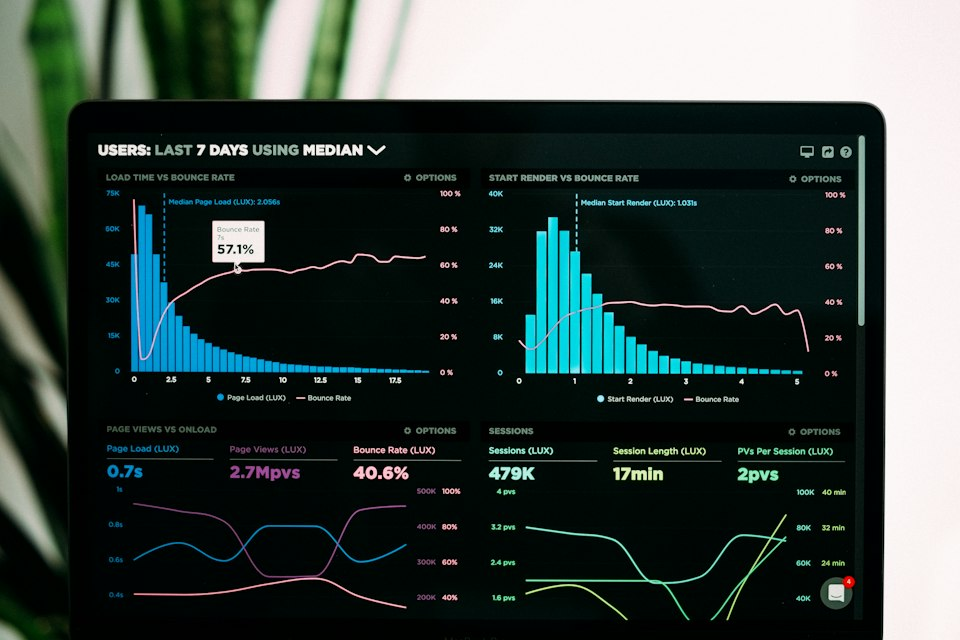

School management systems
Bring student administration, attendance, academic records, examinations, report cards, timetables and staff information into one organised system.
Discuss a school system ↗Software engineering · IT services
We design, build and support digital systems that help organisations work smarter. Start with one service or bring us a bigger challenge—we’ll help you work out what fits.
Tell us what you needSoftware products
Our subscription software gives teams online access to useful business tools, with hosting, maintenance and updates handled centrally.
Bring student administration, attendance, academic records, examinations, report cards, timetables and staff information into one organised system.
Discuss a school system ↗Keep property, tenant, lease, occupancy, maintenance and payment records together, making it easier to follow up and stay organised.
Discuss property software ↗Record sales, manage stock and track product performance through a practical system for retail, restaurants and other small businesses.
Discuss a POS system ↗Streamline repeat tasks and bring important operational information into a clearer view, with features shaped around your organisation.
Discuss business software ↗Development & IT services
From a new website to security and infrastructure, we bring software and IT expertise together under one roof.
Purpose-built software and connected business applications, designed around your workflows and requirements.
Responsive websites and browser-based applications that work across modern phones, tablets and computers.
Applications designed to serve users across supported devices and platforms through a consistent experience.
Security reviews, stronger access controls, system hardening and practical advice to help protect your digital operations.
Explore practical ways to automate routine work and apply AI to real business processes—not technology for its own sake.

06Organise business data into clear reports and useful insights that help teams make informed decisions.
Installation, configuration and maintenance of CCTV systems and surveillance infrastructure.
Supply of computers, peripherals, networking equipment and related hardware for business and institutional use.
Tell us what you are trying to improve. We’ll help you identify a practical next step, in plain language.